Desktop · 1300 · every state
Editors are popovers anchored under the text (420px, flipping above when there is no room below). The tray opens above the bar, bottom right.
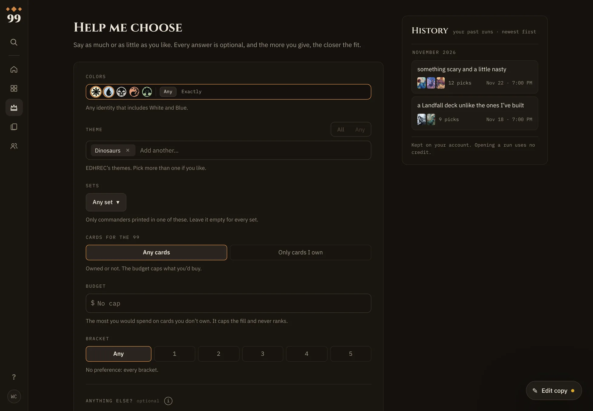
1 · Mode off
Admin on staging: the page as players see it, plus the door. Desktop: the Edit copy pill, bottom right. Phone: a pencil in the header beside search. The amber dot says staging.
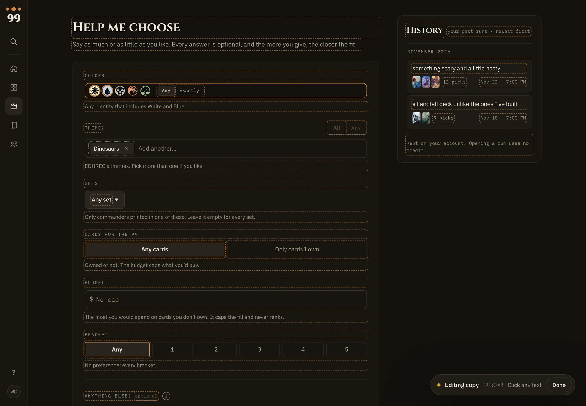
2 · Mode on
Every editable text gets a dashed outline. It is a CSS outline, so nothing moves. Read-only text (the Dinosaurs chip) is dotted grey. The pill becomes the bar: Editing copy, staging, Done.
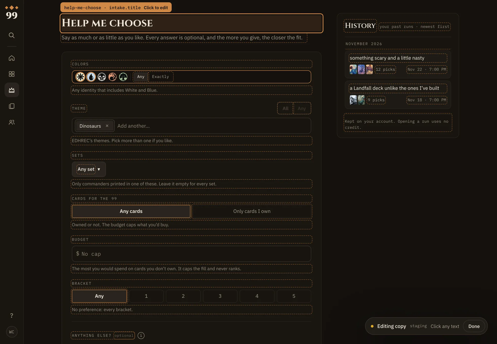
3 · Text targeted
Desktop hover, or a phone's first tap: a solid outline and a tag with the file and key. Desktop clicks to edit; a phone taps again, so scrolling never opens an editor.
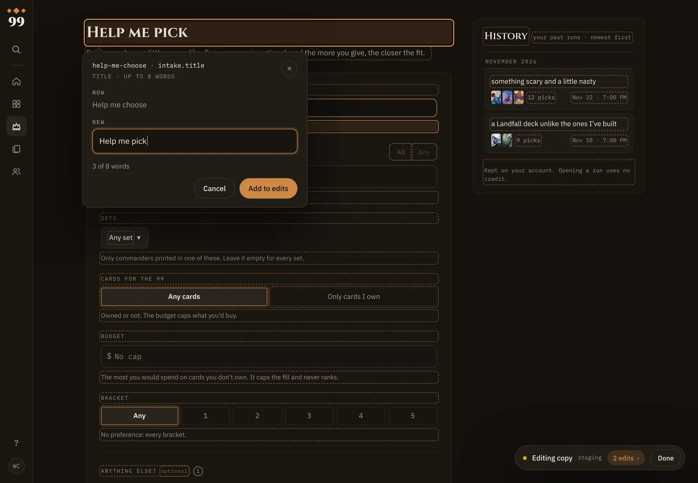
4 · Editor · plain
Now above, New below, the cap for the key's kind live as you type (title: up to 8 words). The page previews the new words in place.

5 · Editor · with fill-ins
{names} is a locked chip: it drags to a new spot and can’t be deleted. A line says what the app fills it with here, and a preview reads the whole sentence.
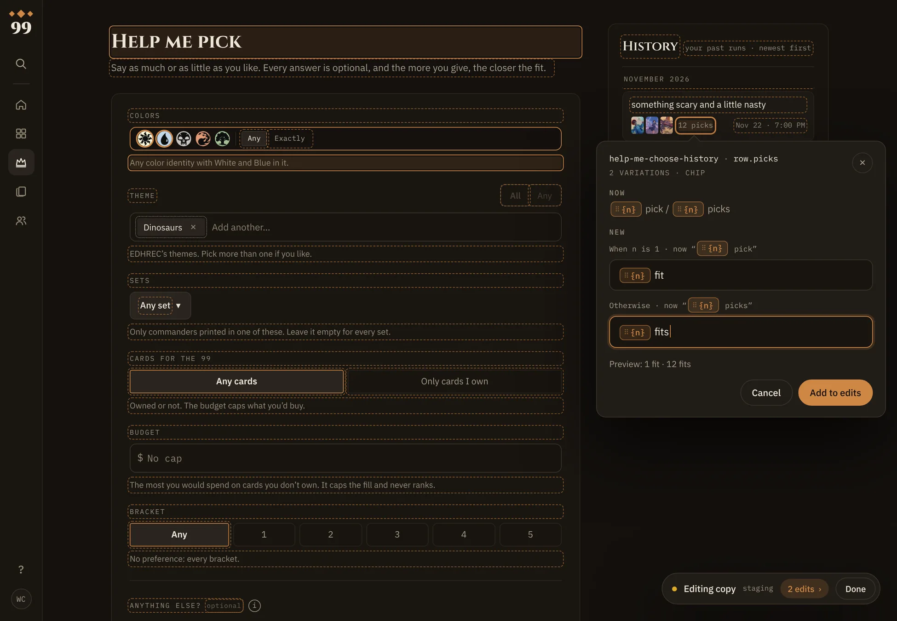
6 · Editor · with variations
One line’s variations edit together, each labelled by when it shows (n is 1 / otherwise) with today’s words beside it, and one preview of both.
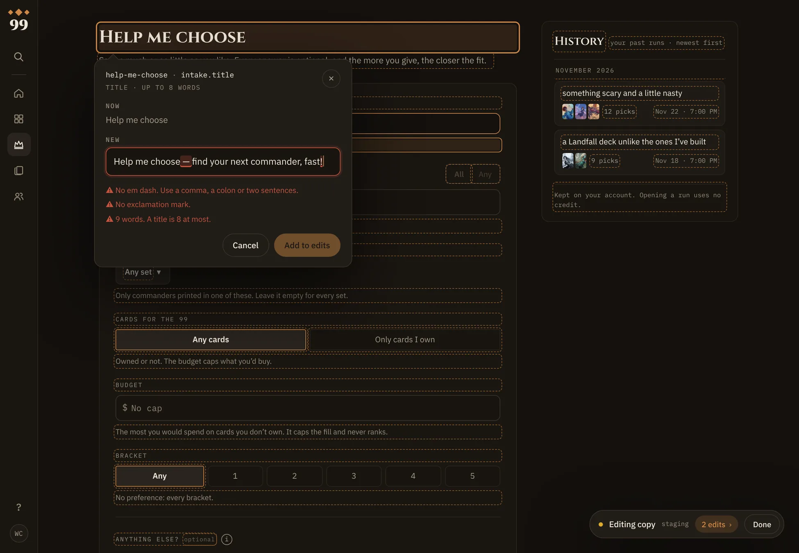
7 · Editor · rule error
Problems mark the text and list under the field as you type: the em dash, the exclamation mark, 9 words on an 8-word title. Add to edits waits until they clear.
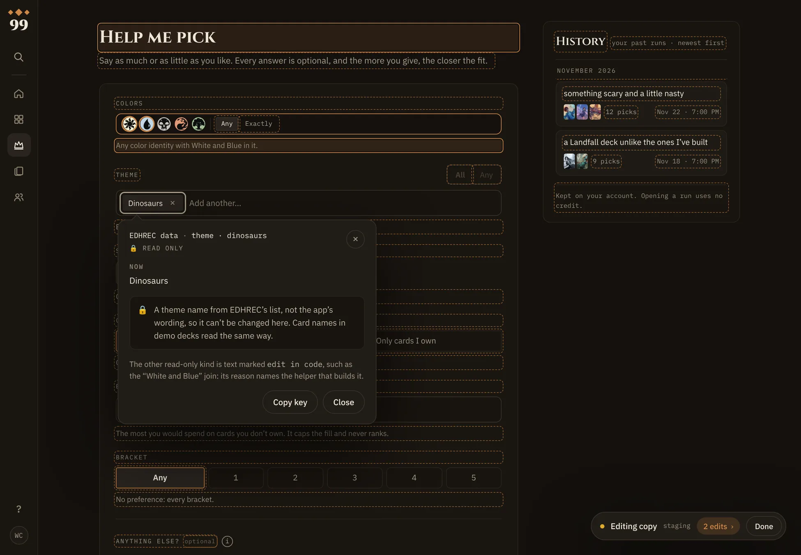
8 · Editor · read only
Same frame, no field: a lock, today’s text and a one-line reason. Copy key and Close. Edit-in-code text gives the helper that builds it as its reason.
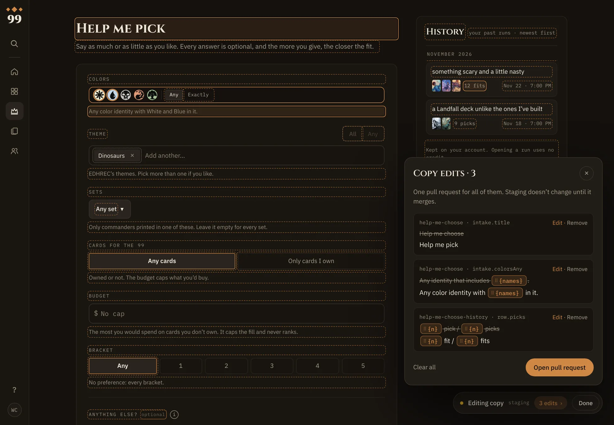
9 · Tray with edits
The bar’s ‘3 edits ›’ opens it. Old struck through, new below, key on top; Edit and Remove per row; Clear all; Open pull request.
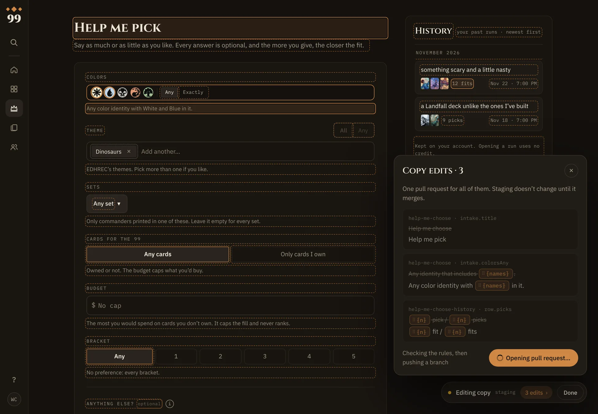
10 · Submitting
Rows lock and dim; the button spins: ‘Checking the rules, then pushing a branch’.
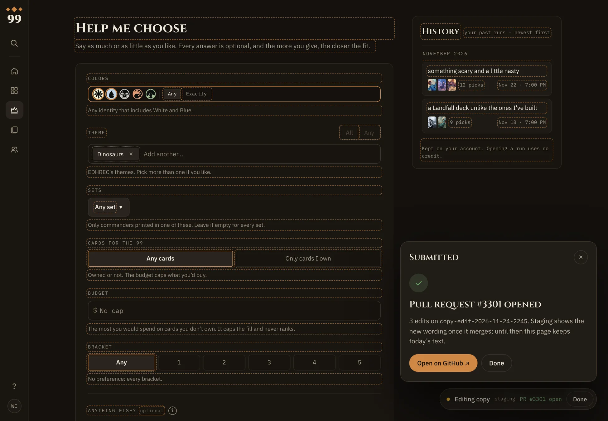
11 · Submitted
PR number, branch, Open on GitHub. The page goes back to today’s staging text, and the bar keeps ‘PR #3301 open’ until it merges.
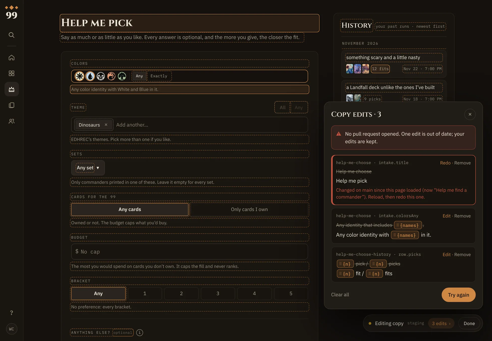
12 · Failed
No PR. Edits are kept. The edit at fault is flagged with its reason (here: changed on main since the page loaded) and Redo; Try again resubmits.